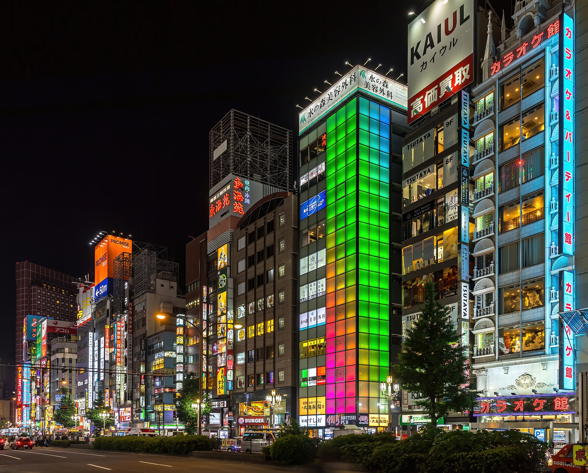

Day1
Land & Ease In
Shinjuku by night
Arrival day, so the only goal is staying awake until a normal bedtime to beat the jet lag. Land in the afternoon, drop the bags, then wander Shinjuku as the neon comes on.
- •Soak in the neon and crowds of Shinjuku↗
- •Duck into Omoide Yokocho — tiny smoky food alley↗
- •First yakitori skewers and your first real bowl of ramen↗